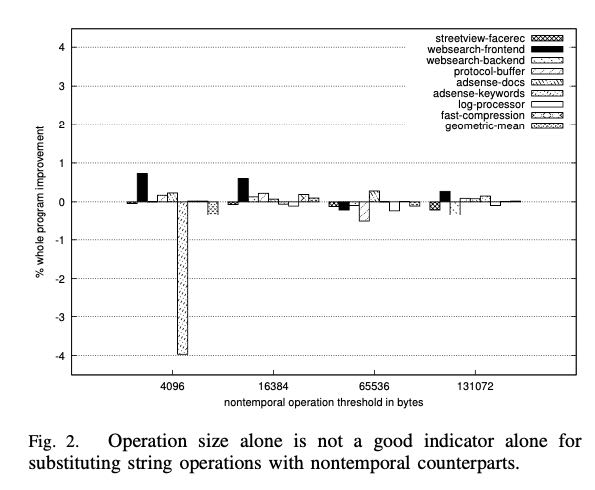
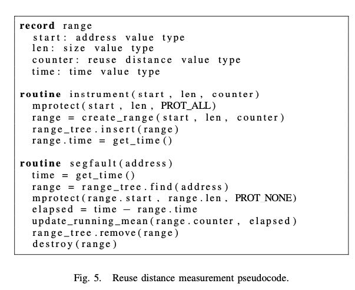

Automated Locality Optimization Based on the Reuse Distance of String Operations
这个论文的思路非常简单，就是分析某个对象的temporal locality, 决定本地操作这个对象是应该采用temporal write/read还是non-temporal write/read. 文章以memcpy函数举例，但是可以扩展到许多个string operations的函数上。思路虽然简单，但是实现上有许多坑，而且都是系统级别的坑，所以好多也看不太懂。
以这个memcpy的使用场景来说，如果memcpy在实现的时候，如果更新dest使用temporal-write的话，就会有两个问题：
- dest首先会被载入到cache中，那么src被排除到cache的概率会升高。
- dest需要很远之后才会被使用到，期间可能被evicted.
memcpy( dest , src, 65536); // ’ src ’ is reused immediately do something( src ); work_on_something_else(); // ’dest’ is reused much later. do something( dest );
所以最合理的思路是，在读写内存的时候，判断这块内存下次被使用的距离。如果这个距离很长的话，那么期间它可能会被evicted, 我们就没有必要使用temporal操作。反之之后大概率会被使用到的话，使用temporal操作就比较合算。
这让我想起了Fastmemcpy实现中 https://github.com/skywind3000/FastMemcpy/blob/master/FastMemcpy.h 有对copy size的判断，这个问题论文里面也有提到。使用copy size来做hint是个选择，但是这个选择还不够好。可以看到，在4096这个地方，使用non-temporal write有好有坏，在adsense-keywords上似乎影响比较大。不过在更大的尺寸上，好像差别就没有那么大了。

文章后面作了一组实验来验证，对于不同的access pattern, non-temporal和temporal rw还是存在性能差异的，只不过我觉得好像差别没有那么的大。不过考虑到google datacenter级别的量，能减少一点点都是巨大的节省。
做reuse distance measurement的代码如下，思路就是在初始的时候对这个memory range增加一个内存保护，下次访问这个内存的时候会触发segfault. 我们在segfault handler里面查找到，从这里到上次增加内存的距离。至于这个距离怎么定义，可以是clock walltime, 也可以是L2 cache writebacks（论文里面说的，但是不知道怎么实现）

通过segfault来触发回调有一些风险，就是没有办法完全搞清楚，这个segfault是来自系统的，还是来自这个instrumentation的，作者在engineering这节提到了许多这方面的问题以及解决办法。另外这个instrument是对libc进行包装的，在调用syscall之前需要验证访问这些内存地址是否会出现page fault（不太明白为什么一定需要）。实现方式是，分别访问每个page的一个word，来看看是否出现page fault. 但是对于C-string这样null-terminted的东西，就只能访问所有的字节了。
整个segfault handler有两个瓶颈：内存和性能开销。性能开销是通过做sampling来解决的，而内存的话则通过自定义的内存分配器。如果发现内存不够的话，那么直接丢弃这个instrunmentation request.
有了这些信息之后，就可以结合gcc profile-base optimization技术来使用了。先跑一段时间，拿到profile数据，然后结合profile数据重新进行编译优化，决定non-temporal/temporal operation.